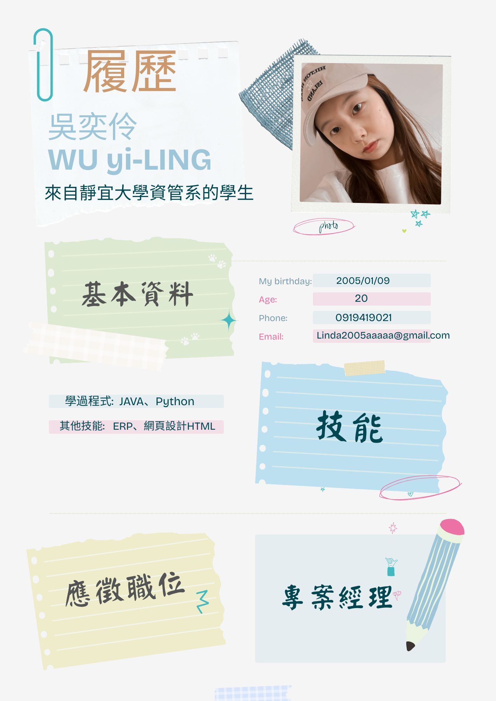
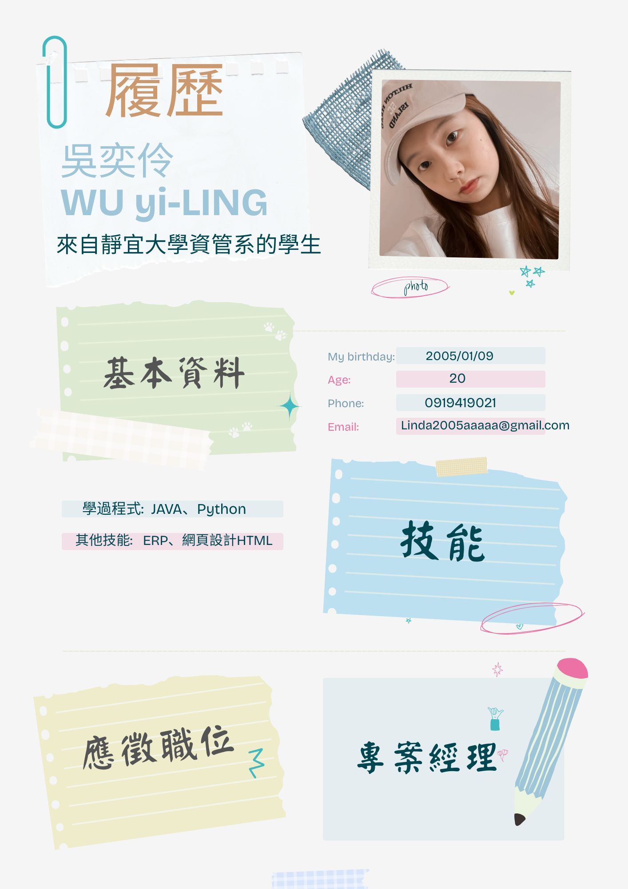

1. 跨部門溝通梳理需求，制定最佳解決方案
2. 規劃軟體專案的藍圖，包括定義範疇、分配資源、設定時程、制定溝通策略，並規劃測試和維護工作
3. 撰寫產品規格相關文件，與專案關係人說明
4. 進行測試，確保專案達到標準並獲得客戶認可
5. 提供後期產品支持，監控產品運行狀態
1. 至少兩年以上專案管理經驗
2. 熟悉使用專案管理工具，如Jira、Trello等
3. 優秀的團隊協作和溝通能力
4. 熟練使用Office及Google套件工具
5. 良好的語言表達能力及英文讀寫能力
加分條件:
1. 英語具備口說能力
2. 具製造業相關實務經驗，熟製造業資訊系統及應用
我未來想做的工作是專案經理:
在我的測驗中也有提到我是屬於C、E(企業、事務型)的人，在修習系上必修的課程時我也發現比起鑽研程式，我更喜歡銷售管理類方面，並且我本身也喜愛負責策劃、領導、整合等事務，因此我想往這方面發展。
實力養成:
提升自我實力像是程式的閱讀認知、與人的溝通協調、邏輯判斷方面的能力並熟悉資訊相關的系統及應用，取得相關專案管理師證照，還有像是市場的一些專業操作流程，像是系上也有修習過的電子商務，之後也要去學習預算控管方面還有如何評估一件事的風險。
現有技能:
程式:Java、Python(基礎)，網頁:HTML，企業資源規劃(ERP系統)
